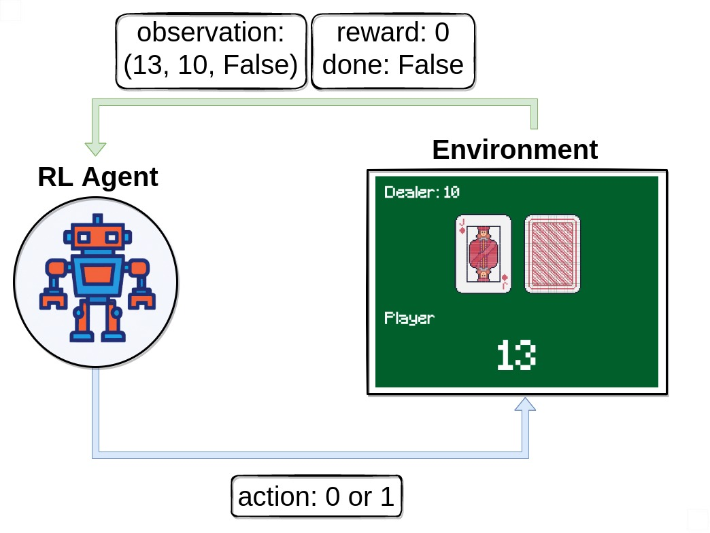

Blackjack is a popular card game played against a dealer. The goal is to have cards whose total value is higher than the dealer’s but not exceeding 21. Each card has a point value: the cards 2 through 10 are worth their face value, face cards (Jack, Queen, King) are worth 10, and an Ace can be worth 1 or 11. The game is typically played with multiple decks of standard playing cards.
Related Work
The pursuit of an optimal blackjack strategy has long captivated a diverse array of scholars including mathematicians, statisticians, and gambling enthusiasts, fueling a wealth of academic and practical research over many decades. The groundbreaking study by Baldwin, Cantey, Maisel, and McDermott in 1956, presented in “The Optimum Strategy in Blackjack,” was the inaugural attempt to apply a rigorous mathematical framework to the game. Their formulation of a basic strategy considerably decreased the house advantage, a methodology that was further refined and widely disseminated by Edward O. Thorp in his 1962 seminal work, “Beat the Dealer” (Thorp, 1962). Thorp introduced the concept of card counting along with sophisticated strategy algorithms, which positioned blackjack as a focal point for both professional gamblers and scholarly research.
This pioneering work spurred the development of a plethora of card counting systems from the 1960s to the 1980s, designed to afford players a competitive edge against casinos. Notably, Harvey Dubner’s Hi-Lo strategy, alongside subsequent modifications by figures such as Ken Uston and Stanford Wong, gained traction for their efficacy and user-friendly application.
Advancements continued into the 1990s and beyond with the advent of computer simulations, which have played a pivotal role in refining strategies. Researchers like Julian Braun and Peter Griffin leveraged advanced computational tools to simulate countless blackjack hands, thereby enhancing playing techniques, honing betting strategies, and enriching the understanding of the game’s statistical foundations.
The new millennium has seen further innovations with the application of reinforcement learning (RL) to optimize blackjack strategies, encompassing a range from basic methodologies to advanced machine learning techniques. A tutorial from Gymnasium Farama elucidates the fundamental concepts and practical application of RL in blackjack, offering an accessible introduction for novices utilizing the OpenAI Gym environment (Gymnasium Farama, n.d.). Concurrently, practical implementations on platforms such as Kaggle have demonstrated the utility of Q-learning based agents that maximize gaming returns, underpinned by detailed performance analytics and evaluations of parameter impacts (Kaggle, n.d.). Additionally, a project from Stanford University explores sophisticated strategies utilizing deep learning and neural networks, showcasing the flexibility and challenges of AI in dynamic gaming contexts (Stanford University, 2018). Collectively, these investigations not only deepen the comprehension of strategic decision-making in gaming contexts but also illustrate the potential of AI to revolutionize established gaming strategies.
Summary
This study evaluated several reinforcement learning (RL) strategies, including Monte Carlo (MC) on-policy, MC off-policy, SARSA, Q-learning, and Deep Q-Network (DQN), within the blackjack simulation provided by the OpenAI Gym framework. The findings revealed that the on-policy Monte Carlo method yielded the most effective strategy. However, despite this relative success, the expected return for the player remains negative. This outcome underscores the inherent challenge of consistently outperforming the casino over the long term in blackjack.
Environment
The modeling of blackjack has been buil within the Gym environment. This significantly enhances the accessibility and flexibility for researchers conducting various experiments. This integration into the Gym framework streamlines the process of testing and developing different strategies by providing a standardized model. Here, I will outline the fundamental concepts of this model to aid readers in understanding how it functions and facilitates research in this domain.

Action Space
The action shape is (1,) in the range {0, 1} indicating whether to stick or hit.
Observation Space
The observation consists of a 3-tuple containing: the player’s current sum, the value of the dealer’s one showing card (1-10 where 1 is ace), and whether the player holds a usable ace (0 or 1). The observation is returned as (int(), int(), int()).
| Player current sum |
12 |
21 |
| Dealer showing card value |
A |
10 |
| Usable Ace |
0 |
1 |
We have set the minimum for the ‘Player current sum’ to 12 in our model, as strategic decision-making between hit or stick becomes relevant only when the player’s sum is 12 or higher. Below this threshold, the player faces no risk of busting and will invariably choose to hit. This assumption simplifies the model without sacrificing its strategic depth.
Rewards
- win game: +1
- lose game: -1
- draw game: 0
- win game with natural blackjack: +1.5 (if natural is True) +1 (if natural is False)
Termination
The episode ends if the following happens:
- The player hits and the sum of hand exceeds 21.
- The player sticks.
An ace will always be counted as usable (11) unless it busts the player.